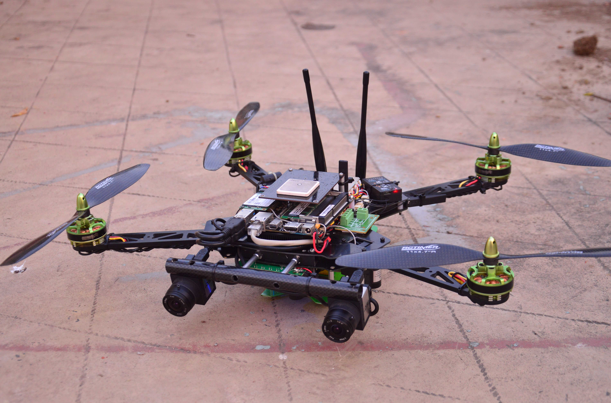

Our MAVs
MAV3
MAV3 is the current bleeding-edge experimental platform for testing of the Linux port of the PX4 flight stack. MAV3 will be using Linux boards (Snapdragon Flight, RPi 2, etc.) for flight control and higher-level functions, on all revisions. The aim is to provide a robust high-definition video streaming platform, while remaining very compact and still having sufficient computational power for vision applications. The MAV is a 250-sized quadrotor, and can be very comfortably flown indoors.
Rev
1 hardware :
Computation
and Autopilot : Raspberry
Pi 2 with Navio shield
GNSS :
Ublox M8
(Integrated)
Communications
: (Integrated)
Rev 2
hardware :
Computation
and Autopilot : Inforce
6540 with custom shield
Rev 3
hardware :
MAV2
MAV2 is the current-generation
development prototype. It currently carries an Intel Core i7
Skylake-series computer. The system purges all other deprecated
interfaces, and uses only CAN-bus and the UAVCAN protocol for all
onboard intra-modular communication. It is also much smaller than
the previous MAV1, and can safely fly inside a stairwell. It's aim
is to provide a powerful testbed for computer vision algorithms,
path planners and visual SLAM.
Rev
1 hardware :
Computation : Odroid
C1
Autopilot :
Pixhack (Pixhawk derivative with internally-dampened IMU)
GNSS :
Zubax GNSS v1
Communications
: ALFA AWUS036H 802.11g (short-range)
Camera : 1
x HD TI-DM368 IP camera module
Rev
2 hardware :
Computation
: Intel Core i7 board
Autopilot :
Pixhack (Pixhawk derivative with internally-dampened IMU)
GNSS :
Zubax GNSS v1
Communications
: Ubiquiti Rocket M5 (long range, upto 5 km)
Cameras : 1
x PX4Flow, 2 x IDS uEye SE (stereo configuration) , 1
x PointGrey FireFly-MV USB (bottom facing)

Rev 3
hardware :
Computation
: Intel Core i7 board
Autopilot :
Pixhack (Pixhawk derivative with internally-dampened IMU)
GNSS :
Zubax GNSS v2
Communications
: Ubiquiti Rocket M5 (long range, upto 5 km)
Cameras : 1
x PX4Flow, 2 x IDS uEye SE (stereo configuration)
Laser Scanner :
Neato-XV11
MAV1
MAV1 was the first Artemis
series vehicle to carry Intel x86 computing onboard. It is powered
by an Intel Core i5 NUC. We started testing out our stereo-vision
based mapping and obstacle avoidance system on this platform.
Computation : Intel
Core i5 NUC (This is the same computer that Team
Swissfang used in their 2014 OBC entry!)
Autopilot :
Pixhawk
GNSS :
Zubax GNSS v1
Communications
: Ubiquiti Rocket M5 (long range, upto 5 km)
Cameras : 2
x PointGrey FireFly-MV USB (stereo
configuration)
MAV X
MAV X was the very first among the Artemis MAVs. It had standard propulsion system, and carried an Odroid U3 and a Pixhawk autopilot board. We first demonstrated GPS-denied positioning with a combination of optical flow and active monocular vision on this platform.Computation : Odroid U3
Autopilot : Pixhawk
GNSS : None
Communications : D-Link 802.11ac (short range)
Cameras : PX4Flow, PointGrey FireFly-MV USB (bottom facing)